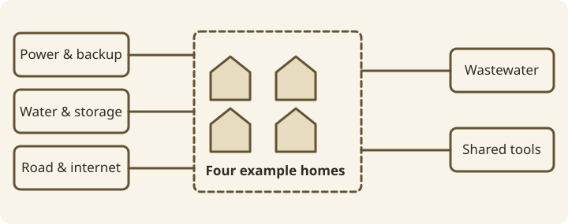

1. Set the service target
Start with a small cluster of homes and one shared service. Record occupancy, the local worst season, which loads must stay on, the intended outage duration, and how emergency services, work, and suppliers reach the site. The first pilot needs a named operator and someone else who can cover the work.
2. Screen land before committing

- Ask local planning and health authorities about the intended number of dwellings, access, drinking water, and sewage options.
- Compare soil, drainage, flood exposure, road access, and reliable internet. A survey helps screen parcels. Verify the short list on site.
- Bring the water source, expected yield, quality results, storage, wastewater options, and legal questions to qualified local specialists before pricing construction.
USDA Web Soil Survey · FEMA Flood Map Service Center · EPA clustered wastewater guidance
3. Measure loads and compare power options
Reduce building heating and cooling demand before sizing generation. Log watts and hours for each essential device, plus simultaneous peak and starting loads. Compare independent home systems with a shared microgrid using the same loads and outage target.
| Input | Calculation | Daily energy |
|---|---|---|
| Four homes | 4 × 5 kWh | 20 kWh |
| Shared services | One pump and network allowance | 2 kWh |
| Total | 20 + 2 | 22 kWh |
Battery and solar example
Energy = watts × hours ÷ 1,000. Two days at 22 kWh/day is 44 kWh delivered. At an assumed 80% usable discharge and 90% inverter efficiency, the arithmetic yields 44 ÷ (0.80 × 0.90) ≈ 61.1 kWh nominal, before aging, cold-weather reserve, and starting loads.
If the weakest month averages 2.2 kWh per kWdc per day, 22 ÷ 2.2 = 10 kWdc is the average energy balance for that example. The final design also needs to survive below-average days and recharge after an outage. The sample excludes full space heating.
DOE whole-home design · PVWatts preliminary solar model · Microgrid planning (PDF)
4. Size water and separate its uses
List drinking, sanitation, laundry, irrigation, and fire-water requirements separately. For the example’s selected uses, 12 occupants × 15 US gallons/person/day = 180 gallons/day. Three days at that demand requires 540 US gallons of usable storage. The example is a sizing exercise. The permitted design needs measured demand, verified yield, water quality testing, treatment where required, and locally determined reserves.
Dancing Rabbit reports shortages during drought or periods of heavy use. Model peak demand and low supply together and document the backup before relying on the system. Dancing Rabbit’s water operations · EPA well guidance
5. Compare actual costs and assign responsibility
Get dated written quotes for design, permits, site work, housing, equipment, installation, and commissioning. Budget separately for annual labor, insurance, consumables, testing, repairs, and replacements. For a shared component with a $12,000 replacement cost and a 10-year planning life, a simple reserve is $1,200/year. If four households divide it equally, that is $25/month each. Add inflation, financing, other costs, and different allocation rules in the full model.
Earthaven’s account of revising its ownership model is a reason to settle responsibilities, payments, access, and exit terms before families commit. Earthaven’s ownership history · Examples of shared-service funding · Download the pilot inputs (CSV)
6. Commission, maintain, and expand
- Have qualified professionals commission regulated systems. Test the backup and record starting conditions, loads, time, and what failed.
- Maintain a log of inspections, repair hours, seasonal shortages, and actual monthly costs. Keep drawings, operating instructions, spares, and fallback contacts available to the responsible operators.
- Have a second operator follow the handoff instructions. Expand after the system has held up through the hardest season and recurring income covers upkeep and reserves. Recheck capacity before adding homes.
Read the proposed operating model · Download the household systems worksheet